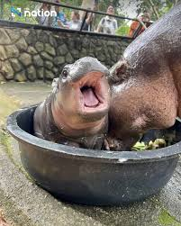
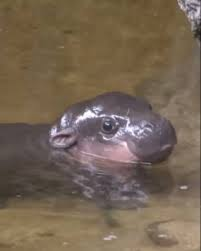
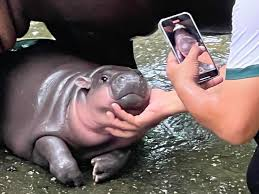

Meet Moo Deng, a lively pygmy hippopotamus residing in the Khao Kheow Open Zoo in Si Racha, Chonburi, Thailand. Born on July 10, 2024, Moo Deng has quickly become a beloved resident of the zoo, known for her feisty and energetic personality.
-Favorite Food: Moo Deng loves a diet rich in fresh fruits and vegetables, with watermelon and carrots topping her list of favorites.  -Favorite Activities: Swimming is her favorite activity. She enjoys diving underwater and surprising her mom. -Companions: Moo Deng shares her home with various animals and enjoys interactions with her caretakers. 